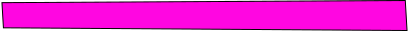

Street Jam Festival
Le 15 octobre 2023, Vevey célèbre les tendances actuelles en matière d'art urbain et de musique, et rassemble une communauté de personnes partageant les mêmes intérêts.
Notre événement offre une variété d'activités pour les visiteurs, notamment des démonstrations de skate réalisées par des professionnels, des ateliers de graffiti interactifs, des expositions d'œuvres d'art urbain innovantes et des performances musicales d'artistes locaux et internationaux.
Notre objectif est de créer un espace pour que les artistes de rue et les amateurs de culture urbaine puissent se rencontrer, partager leur savoir-faire et leur passion pour l'art urbain et s'immerger dans une ambiance urbaine unique.
Notre festival propose également une sélection de stands de restauration proposant une cuisine de rue authentique pour ravir les papilles des visiteurs.
Tage/ Graffiti/ Street art
09h-11h00:Session libres
10h00-12h00
:Atelier de graffiti interactif avec Samuel
13h30-17h00:Démonstation de Manos68 et session libres
Invité d'honneur
Nous sommes ravis de présenter notre invité d’honneur pour le Street Jam Festival , le célèbre graffeur Samuel.

Originaire de Brooklyn, Samuel a commencé à expérimenter avec les bombes aérosols à l'âge de 14 ans et a depuis créé une réputation internationale pour son style unique et expressif. Son travail est influencé par la culture hip-hop, la street culture et l'art urbain contemporain, et est souvent caractérisé/e par des couleurs vives, des formes organiques et des détails saisissants.

Samule est une figure emblématique de la scène graffiti, et son travail a été présenté dans des expositions du monde entier. En plus de son travail de graffeur, il/elle est également un mentor pour la jeune génération d'artistes urbains, organisant des ateliers et partageant son expérience avec la communauté.

Nous sommes honorés d'accueillir Samuel en tant qu'invité d'honneur de notre festival urbain annuel, et nous sommes impatients de voir son talent en action lors de notre atelier de graffiti interactif. Les participants auront l'occasion d'apprendre directement de lui/elle, de découvrir son processus créatif et de s'inspirer de son travail unique.
Skate
09h00-10h00:Inscriptions et accueil des participants10h00-10h30:Démo de skateboard par des professionnels
10h30-11h30: Atelier d'initiation au skateboard pour les débutants
11h30-12h30: Session de skateboard libre pour les participants
12h30-13h30:Pause
13h30-14h00: Concours de skateboard "Meilleure figure" pour les participants
14h00-15h00: Session de skateboard libre pour les participants
15h00-15h30: Démo de skateboard par des professionnels
15h30-16h30: Atelier de skateboard "Street Style" pour les skateurs expérimentés
16h30-17h00:Remise des prix pour le concours "Meilleure figure"
17h00: Fin de la journée